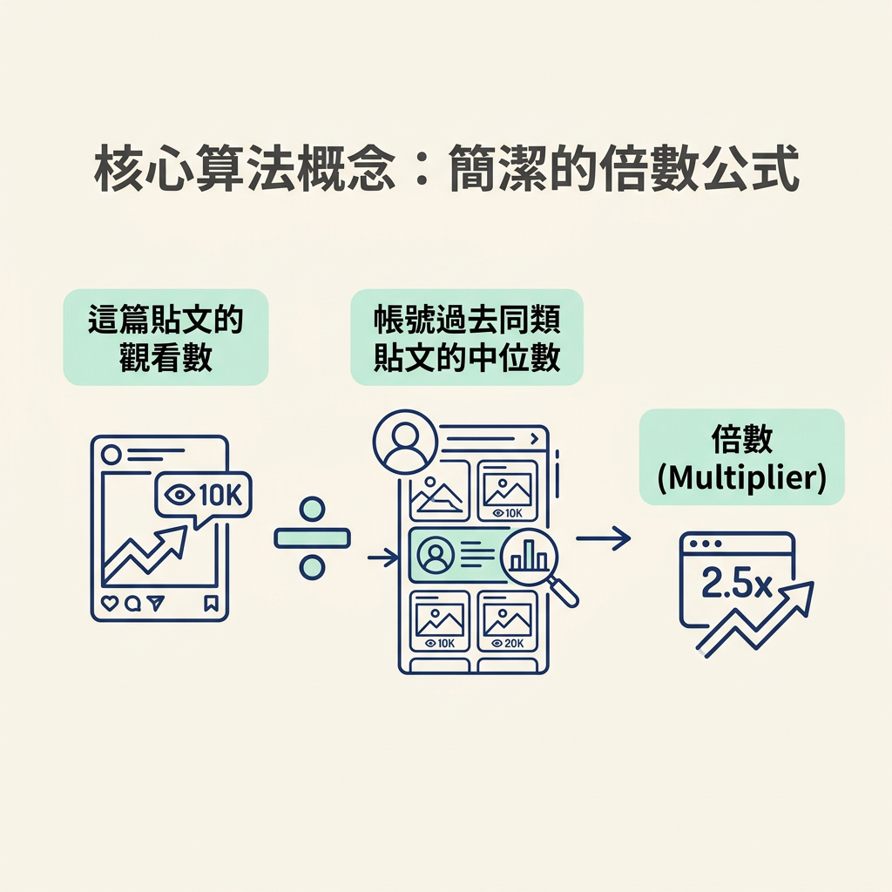
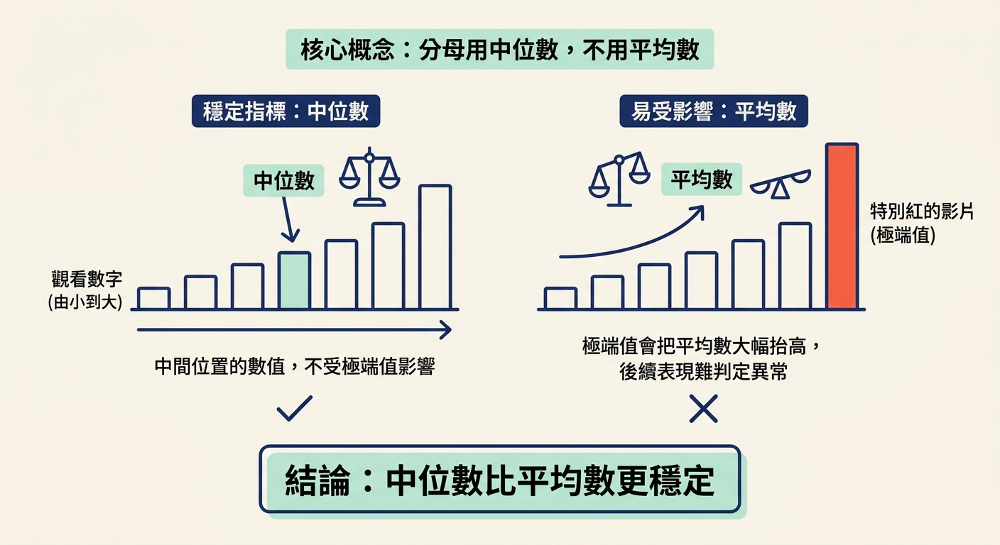

學完這一節，你會知道 outlier score 怎麼算，也就是一篇貼文的觀看數除以帳號平常的觀看數。你也會比較兩種找法：用 vidIQ 邊逛邊看，或免費使用 /outliers 自動計算與排名。
在找內容靈感的流程裡，這一步是把上一節的「相對倍數」變成可以實際比較的分數。Outlier 指的是表現明顯高於帳號平常水準的貼文；找出它們，就能知道哪些內容值得進一步研究。
這一步要看的，是貼文的觀看數和帳號過去貼文的表現；產出則是能比較、排序的倍數分數。上一節你已經知道 outlier 要看相對表現，現在自然會想問：「八倍」是拿哪兩個數字算出來的？如果「平常水準」的算法不同，最後的倍數也會不同。
我們先拆解算法，再依照課程順序認識兩種工具：vidIQ 會在瀏覽時顯示分數；免費的 /outliers 則會替你計算並整理排名。
課程用一個除法說明 outlier score：這篇貼文的觀看數，除以這個帳號平常的觀看數。算式很簡單，關鍵在於「平常水準」要怎麼定義，才能公平比較。
官方 skill 文件把這些數字定義得更精確：
**Two numbers, both computed from public data.** They are not official platform metrics, so say so whenever they appear in public content.
- `multiplier` = views ÷ median views of that account's posts published **before** it, of the same kind: a YouTube Short against the channel's Shorts, a long video against its long videos, because the two earn views at very different rates. LinkedIn shows no view counts, so there it is engagement (reactions + comments + reposts) ÷ the account's median engagement; say "engagement" whenever a LinkedIn number appears.
- `vph` = views ÷ hours since publish.換成白話，倍數＝這篇貼文的觀看數 ÷ 該帳號過去同類貼文的觀看數中位數。這裡的中位數，就是把數字由小到大排列後，位在中間的數字。

文件也列出 vph，也就是觀看數除以上線後經過的時數。它用來看內容累積觀看的速度；倍數看的是相對於帳號平常表現的高低，兩者衡量的不是同一件事。
這個算法有三個重要細節，會影響比較是否公平。
平常水準採用「中位數」，而不是平均數。把觀看數由小排到大，中間那個數字就是中位數。它比較不容易被少數爆紅的影片拉高。
如果改用平均數，一支特別紅的影片就可能把帳號的平均觀看數大幅抬高。這樣一來，後續影片就算表現不錯，也比較難被判定為異常高於平常。

YouTube Shorts 要和 Shorts 比，長片要和長片比。兩者累積觀看的速度差很多，若拿一支 Short 去和同帳號的長片相比，算出的倍數就不容易解讀。文件也特別提醒，這兩類影片的觀看成長速度差異很大。
計算分母時，只會參考這支影片發布之前的貼文。這樣比較才公平，因為較早發布的影片至少有相同或更長的時間累積觀看，不會把剛上線、還來不及累積數字的影片拿來當基準。
下面的程式碼示範如何找出符合條件的貼文，並取中位數作為平常水準：
// Baseline = median views of the channel's uploads of the same kind published BEFORE this video.
// Comparing only against older videos is fairer: they have had at least as long to earn views.
// Shorts and long videos earn views at very different rates, so each is measured against its own kind.
const kindOf = (u) => (u.is_short === 0 || u.is_short === 1 ? u.is_short : guessShort(u));
function baselineFor(uploads, cand) {
const same = uploads.filter(u => u.video_id !== cand.video_id && u.duration_s > 0 && kindOf(u) === cand.is_short);
let pool = same
.filter(u => u.published_at < cand.published_at)
.sort((a, b) => b.published_at.localeCompare(a.published_at))
.slice(0, 30);
if (pool.length < 5) pool = same.slice(0, 30); // young channel: use whatever exists
if (pool.length < 3) return null; // too thin to mean anything
const confidence = pool.length >= 10 ? 'high' : pool.length >= 5 ? 'ok' : 'low';
return { baseline: median(pool.map(u => u.views)), sample: pool.length, confidence };
}算出平常水準後，最後的除法只需要一行：
const base = baselineFor(getUploads(db, c.channel_id), c);
if (!base || base.baseline < OPTS.minBaseline) continue; // dividing by a tiny median fakes huge multipliers
if (info.subs && base.baseline / info.subs < OPTS.minBaselineRatio) continue; // brand account, not a creator
const hours = Math.max((Date.now() - new Date(c.published_at).getTime()) / 36e5, 1);
const row = {
...c,
baseline: base.baseline,
confidence: base.confidence,
multiplier: +(c.views / base.baseline).toFixed(2),
vph: Math.round(c.views / hours),程式還會先排除兩種可能讓倍數失真的情況。第一，分母太小時，少量觀看數也可能被算成很大的倍數，因此會用 min-baseline 擋掉。第二，有些品牌帳號的平常觀看水準接近零，直接相除會得到不可靠的高倍數，所以還有第二道篩選。
這些檢查是為了讓分數更可信，你不需要自己調整。知道它們存在，就能理解為什麼有些貼文不會進入排名。
如果不想自己計算，課程先介紹 vidIQ。它是瀏覽器工具，你瀏覽 YouTube 和 Instagram 時，它會在影片旁顯示 outlier score，方便你快速留意表現突出的內容。
課程示範的例子中，有影片標示「2x my normal」，也有一支約八十萬觀看、接近 7.5 倍的影片。另一個例子是一個只有一萬兩千訂閱的頻道，影片拿到十萬八千觀看，標示約為平常的 13 倍。工具也支援長片和 Shorts。篩選清單還會直接顯示「18x the usual」或「6x the usual」，讓你快速看出哪些內容值得研究。
課程有特別說明，vidIQ 不是贊助商；講師介紹它，是因為自己和許多創作者平常都有使用。它是已經成熟、值得投資的商業工具，但對剛開始的人來說並非必要。
/outliers 自己計算課程也提供免費替代方案：/outliers skill。它的用途很直接，就是讓你不用 vidIQ 也能開始找出表現突出的內容。
使用時輸入 /outliers，agent 就會計算每篇貼文的觀看數相對於帳號平常水準的倍數，再把倍數最高的幾篇排出來。你可以指定一組想研究的影片，也可以請 agent 在你的產業裡搜尋。它涵蓋 YouTube、YouTube Shorts、TikTok、X、Instagram 和 LinkedIn。
完成後，結果會出現在一個可以排序、也可以挑選候選內容的頁面上。它的核心算法和上一節相同：每篇貼文的觀看數除以該帳號的平常觀看數。/outliers 做的事，是把計算自動化，再加上排名。安裝方式則是把課程提供的 zip 交給 agent，讓它依照 README 設定。
| vidIQ | /outliers | |
|---|---|---|
| 花費 | 付費工具，屬於成熟的商業支出 | 免費，使用 agent 的額度 |
| 怎麼用 | 瀏覽 YouTube、Instagram 時，在影片旁自動顯示 | 輸入指令，讓 agent 掃描並排名 |
| 涵蓋範圍 | 以瀏覽時看到的內容為主，支援長片與 Shorts | YouTube、Shorts、TikTok、X、Instagram、LinkedIn |
| 適合誰 | 已經常在瀏覽，想即時看到提示的人 | 剛開始、想免費重複掃描的人 |
課程建議先從免費的 /outliers 開始，把找 outlier 這件事放進日常流程。等到你已經常常使用，也確實需要瀏覽時即時提示，再考慮付費工具。先把流程跑起來，不必一開始就增加支出。
Outlier score 的算法是：這篇貼文的觀看數除以該帳號平常的表現。平常水準取過去同類貼文的觀看數中位數，而且只比較更早發布的內容；Shorts 和長片也各自比較。vph則是觀看數除以上線時數，用來看觀看累積的速度。想找出高倍數貼文，可以用 vidIQ 邊逛邊看，也可以免費使用/outliers計算、排名並整理結果；剛開始不必先付費。
現在你已經知道分數怎麼來，也知道可以用哪些工具找內容。下一節會把免費方案實際跑起來：從下載 zip、申請 YouTube API key、填入你的利基，到開啟結果頁。